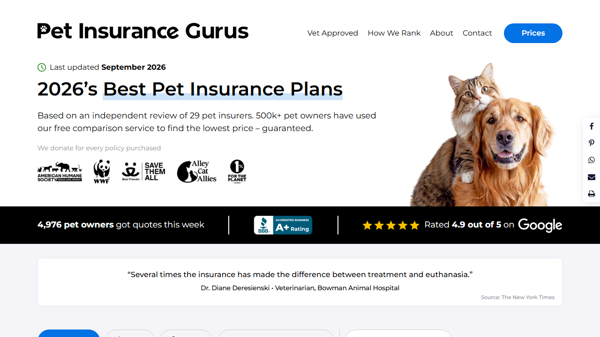
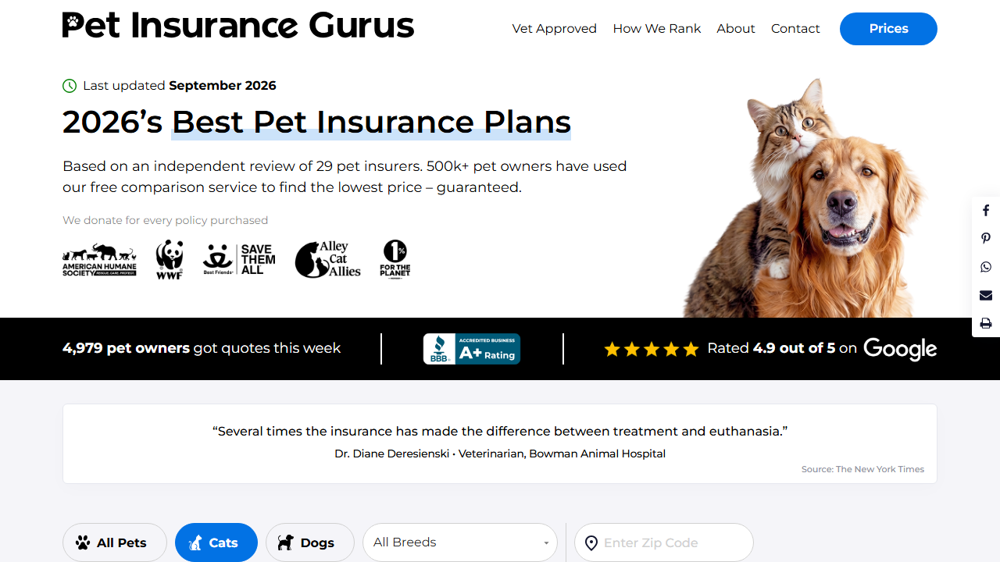

Summary
The failure pattern is 100% deterministic — the same 10 of 39 test cases fail in every single browser/device, for both arms, with zero flakiness. That points to genuine functional bugs, not environment/CDN noise (a contrast with this client's SWF151 test, which had CDN-timeout flakiness on its last 3 browsers).
Methodology note — V1's live force-preview URL doesn't work
The V1 force-preview link (_conv_eforce=100052787.1000257233) rendered byte-identical
to the bare hardcoded page on every attempt. This was not a caching/timing artifact — the
_conv_v cookie confirmed Convert genuinely bucketed the browser into that variation, so
Convert bucketing works but no code appears to be wired to that variation slot yet.
V2's link works correctly. To QA both arms consistently, this suite injects the real
vB.js/vB.css and va3.js/va3.css files directly
into the live site (the same method already established for this client's SWF151 rebuild tests).
Action item for the client/Asher: confirm vB.js/vB.css are attached to variation
1000257233 in Convert before launch.
Confirmed bugs
BUG-01 — "Show More" is fought by a 3-second background interval; page loads collapsed by default
The code's own comment says the default state should always land expanded, but the line
that would do that — expandIfCollapsed() — is commented out in both vB.js
and va3.js (line 152). Confirmed live: only 7 of 10 cards show on load.
Worse: for 3 seconds after load, a background setInterval
unconditionally re-applies the collapsed CSS class on every 250ms tick, with no check for whether
the user has since clicked "Show More" — so a fast click on "Show More" gets silently undone a
fraction of a second later. Clicking after the 3-second window works correctly and stays expanded
(isolated recon: 11/11 cards visible and stable a further second later).
Reproduced in: all 7 browsers, both V1 and V2.

BUG-02 — Ratings revert to native values under any filter, contradicting the ticket
Ticket requirement: "Whenever any of the filters are active, we will restore the native website behaviour for the sorting order. However, the ratings will continue to be applied from the test."
Confirmed live: activating Cats, Dogs, or a ZIP code correctly restores native order
— but every rating/score/classification also reverts to native, because both the order overrides
and the rating overrides are gated behind the exact same body.cre-t-164-default class.
hasActiveFilters() removes that one class for any active filter, undoing everything at
once. Example (V1, Cats filter): Liberty Mutual should still read "6.7 Good" but shows the native
"5.1 Average"; ASPCA should still read "4.5 Average" but shows the native "8.7 Excellent".
Reproduced in: all 7 browsers, both V1 and V2, under Cats, Dogs, and ZIP filters.

What was verified and is correct
font: inherit
confirmed via computed style); no gap/spacing regression from reordering or the toggle insertion.Test case breakdown
| TC | What it checks | Result (all 7 browsers × 2 arms) |
|---|---|---|
| TC-01 | Body carries cre-t-164-default on load | ✅ Pass |
| TC-02 | Default load shows all 10 cards expanded | ❌ Fail — BUG-01 |
| TC-03 | Show More reveals remaining cards | ❌ Fail — BUG-01 (race condition) |
| TC-04 | All Pets order matches ticket | ❌ Fail — cascades from BUG-01 (only 7 of 10 visible to compare) |
| TC-05 | All Pets ratings match ticket | ❌ Fail — cascades from BUG-01 |
| TC-06 | Rank bubbles renumber 1–10 | ✅ Pass |
| TC-07 | Pinned Best Overall duplicate exists | ✅ Pass |
| TC-08 | No stray duplicate ids | ✅ Pass |
| TC-09 | Cats filter restores native order | ✅ Pass |
| TC-10 | Cats filter keeps test ratings | ❌ Fail — BUG-02 |
| TC-11 | Switching back to All Pets restores test order | ❌ Fail — cascades from BUG-01 |
| TC-12 | Dogs filter restores native order | ✅ Pass |
| TC-13 | Dogs filter keeps test ratings | ❌ Fail — BUG-02 |
| TC-14 | Switching back to All Pets after Dogs restores test order | ❌ Fail — cascades from BUG-01 |
| TC-15 | ZIP filter drops default class | ✅ Pass |
| TC-16 | ZIP filter keeps test ratings | ❌ Fail — BUG-02 |
| TC-17 | Clearing ZIP restores test order | ❌ Fail — cascades from BUG-01 |
| TC-18 | Overridden rating font-size matches sibling | ✅ Pass |
| TC-19 | No console/page errors | ✅ Pass |
| TC-20 | Bare page shows current hardcoded order (ground truth) | ✅ Pass |
TC-04/05/11/14/17 fail as a direct downstream effect of BUG-01 (the visible-card count is 7, not 10, so the array-equality assertions against the full 10-item expected order/ratings can't match) — they are not independent bugs beyond BUG-01 itself.
Additional test cases to consider
- Breed dropdown selection specifically — not automated in this pass (MUI popup); same code path as Cats/Dogs/ZIP, so BUG-02 almost certainly reproduces there too.
- Re-verify V1's live force-preview URL once Convert has vB.js/vB.css attached to variation 1000257233.
- Duplicate-init guard (re-running the variation script shouldn't double-bind listeners or add a second toggle).